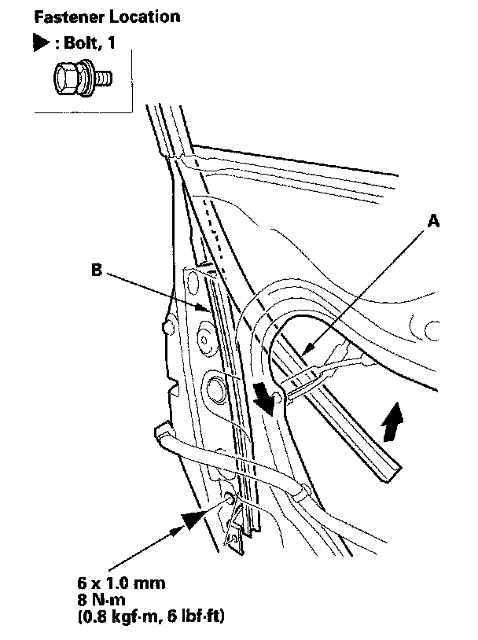
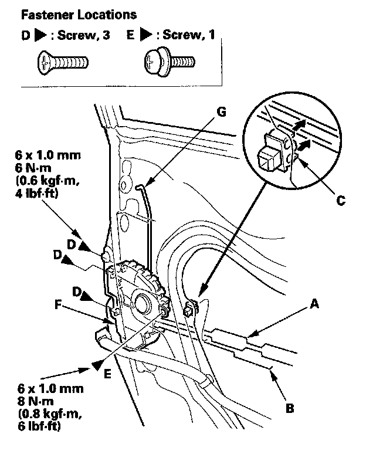
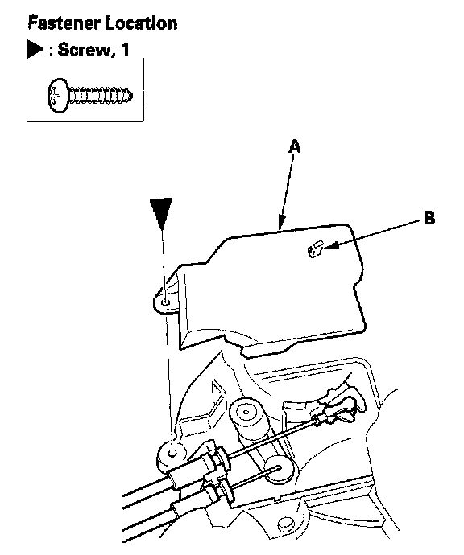
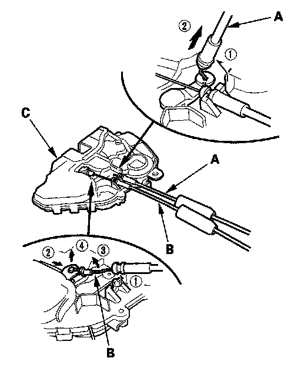

Front Door Latch: Service and Repair
Front Door Latch ReplacementNOTE: Put on gloves to protect your hands.
1. Raise the glass fully.
2. Remove the door panel and inner handle.
3. Remove the plastic cover, as needed.
4. Detach the rod fastener.
5. Disconnect the outer handle rod from the outer handle.
6. Disconnect the cylinder cable from the latch.

7. Pull the glass run channel (A) away as needed, and remove the bolt, then remove the center lower channel (B) by pulling it downward.

8. Detach the latch cable (A) and inner handle cable (B) from the holder (C), then remove the screws (D, E) securing the latch (F), then remove the latch through the hole in the door. Take care not to bend the outer handle rod (G), latch cable, and inner handle cable.

9. Remove the screw, then remove the latch protector (A) by releasing the hook (B).

10. Detach the latch cable (A) and the inner handle cable (B) from the latch (C).
11. Install the latch in the reverse order of removal, and note these items:
- Make sure the actuator connector is plugged in properly and each rod is connected securely.
- Make sure the door locks and opens properly.
- When reinstalling the door panel, make sure the plastic cover is installed properly and sealed around its outside perimeter to seal out water.
- Check for water leaks.